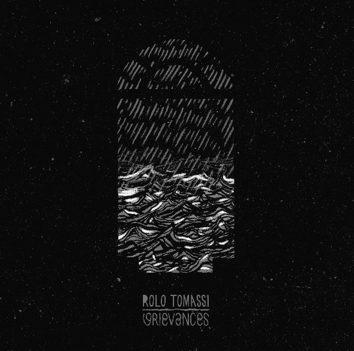
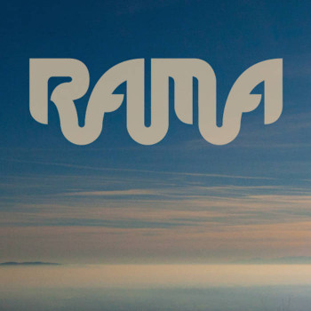
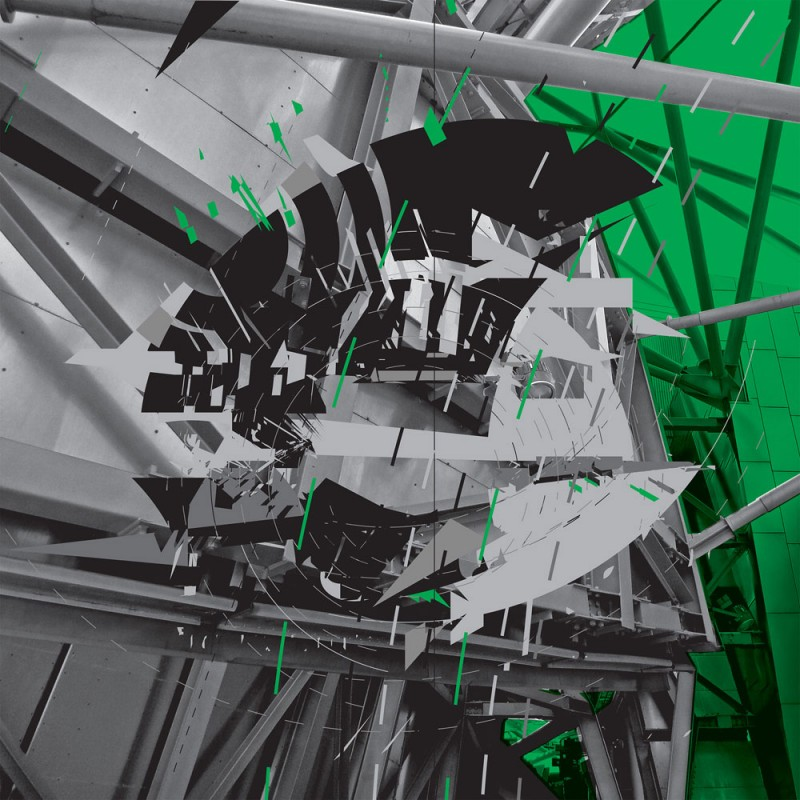
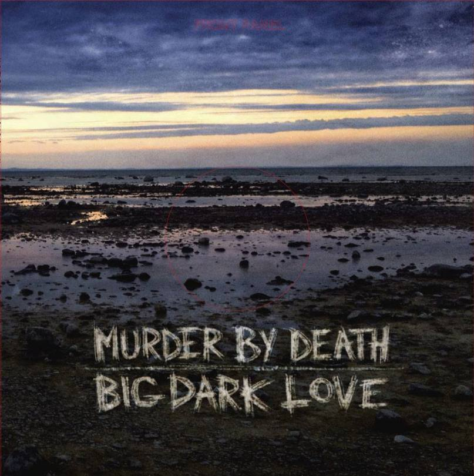
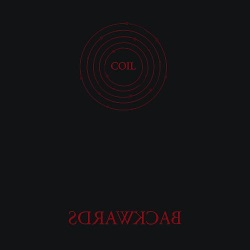
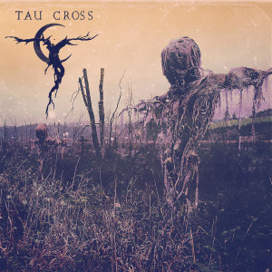
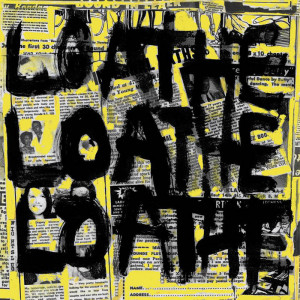
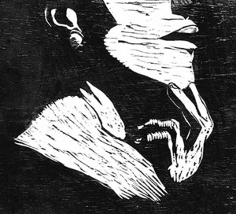

Este año nos hemos adelantado un poquito a la terminación del año para la publicación de los tops (espérate tú que no tengamos una sorpresita a última hora como ocurrió con nuestro querido Cosmonáutica de Erik Urano, ganador moral de hip-hop de «este año»). El caso es que sin más preámbulos, porque lo que realmente queréis es la lista, ahí va lo mejor de 2015 según el criterio democrático de los miembros del staff. Aquí va la primera tanda.
30. Rolo Tomassi – Grievances
 | Con Grievances los británicos han sacado el que seguramente sea el mejor disco de su carrera, y cuyo mayor logro es aglutinar algunos de los sonidos más representativos del pasado más reciente del metal alternativo y del post hardcore. Puede que no estén a la última, pero Grievances es uno de los mayores regalos que 2015 deja al fan del metal/hardcore de los 00s. |
29. Rama – Rama
 | La propuesta de stoner psicodélico de estos italianos nos ofrece una visión muy melódica y progresiva del género sin descuidar la fuerza propia del mismo. Las guitarras que alternan entre potentes riffs y armonías propias del post rock, la música árabe y la asiática, junto a las voces melódicas y corales que evocan cánticos religiosos, son las bazas que hacen de Rama un disco exitoso en su intento de renovación de este sobre-explotado y estancado estilo. |
28. BADBADNOTGOOD & Ghostface Killah – Sour Soul
| El jazz instrumental de los canadienses BADBADNOTGOOD prácticamente pedía a gritos las letras de alguien capaz de rimar sobre los ritmos elegantes, oscuros y épicos a los que nos tenían acostumbrados. Poca broma si el encargado de esta tarea es nada más y nada menos que Ghostface Killah, de Wu-Tang Clan. Uno de los mejores discos de rap del año, crudo y visceral por momentos: tu morirás en algún momento, pero el hardcore no. |
27. Sun Kil Moon – Universal Themes
| El volantazo que pega Mark Kozelek seguro que ha dejado en la cuneta a la mayoría de la gente que amó su anterior disco, Benji. Si el disco del año pasado era enteramente un indie folk amable y de escucha fácil, el nuevo trabajo de Sun Kil Moon es un ir y venir entre el folk americano (empezar un disco con un tema llamado «La Zarigüeya» es una declaración de intenciones) y el rock alternativo de los 90 con el nexo común del estado de ánimo amargo que transmite todo el álbum. Un disco muy desnudo, visceral, en el que la guitarra es aporreada mientras la voz escupe las letras en un tono cercano al spoken word. Un disco difícil y largo pero que merece una oportunidad precisamente por su complejidad y lo que te aporta una vez entras en su propuesta. |
26. Rosetta – Quintessential Ephemera
 | Con Quintessential Ephemera, Rosetta han decidido dar un paso al lado en su carrera musical: alejándose del post metal más canónico y virando hacia al post-rock (algo previsible) y al post-hardcore (esto no creo que lo esperase mucha gente). El cambio puede que no sea del agrado de todo el mundo pero lo que es innegable es que tenemos a los Rosetta más ambiciosos hasta la fecha, lo cual es decir mucho. |
25. Murder By Death – Big Dark Love
 | Los de Indiana han crecido lenta pero firmemente en cada álbum y en esta historia de amor gótico se posicionan en el lugar donde las death-ballads a la americana y el mainstream se dan la mano. Con un sonido muy pulido en estudio, descubren su lado más pop al tiempo sacan el máximo rendimiento a sintetizadores, trompetas y violonchelo; pero ante todo, lo más destacable es que Murder By Death recopilan una suficiente pila de himnos ganadores como para reconocerles en el pódium. |
24. Coil – Backwards
 | Aunque un poco trampa (grabado en 1993, aunque supuestamente inédito hasta ahora), un lanzamiento del mítico dúo de Balance y Christopherson es un acontecimiento en sí mismo, especialmente si se trata de lo que sin duda es alguno de su mejor material. Si bien la mayoría de los temas ya eran conocidos de alguna u otra forma, Backwards presenta versiones alternativas y anteriores a las existentes, y captura la transición de la banda desde la electrónica alucinógena de Love’s Secret Domain hacia la nueva etapa de los años dosmil. Una nota final sobresaliente para una discografía legendaria. |
23. Tau Cross – Tau Cross
 | Que tapaditos han estado Tau Cross para el discazo que se han marcado en su debut, y eso que algunos miembros cuentan a sus espaldas referencias a grupos como Amebix o Voivod. La mezcla de metal, punk-rock, industrial y crust entra como un cuchillo caliente en la mantequilla, a base de riffs certeros y la tabernaria voz de The Baron, consiguiendo un disco de canciones diversas y memorables. |
22. Nightslug – Loathe
 | Por la distorsionada y agresiva voz de herencia sludge en, los riffs oxidados y violentos propios del noise rock y con la brutalidad, la resonancia y lentitud del doom metal: Loathe es con merecimiento uno de los discos mas crudos del año. Un sonido que machaca con paciencia y repetición sustentándose sobre un bajo gordísimo que mantiene unida toda la mole que es este disco. |
21. Ná Ozetti, Passo Torto – Thiago França
 | Repasando este Thiago França se hace difícil comprender como con un género tan representativo de lo “easy listening” como es la bossa nova y la canción brasileña se ha podido engendrar algo tan áspero. Áspero, exgiente, pero ojo, adictivo. La voz de Ná Ozzetti es un genial contrapunto a la amalgama ruidosa de rock con miradas al Brasil del siglo pasado que ofrecen Passo Torto. Ya sabéis, ponemos un disco de bossa-noise en la primera cita. |
Apoyános
{kind=link}
{kind=link}
{kind=link}
{kind=link}
{kind=link}
{kind=link}
{kind=link}
{kind=link}
{kind=link}
{kind=link}